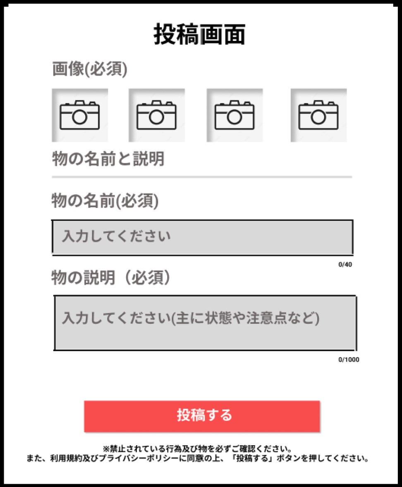
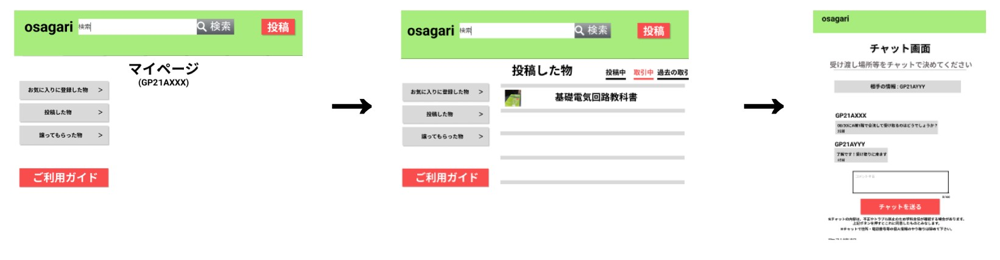
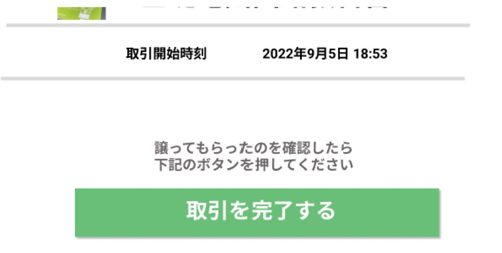
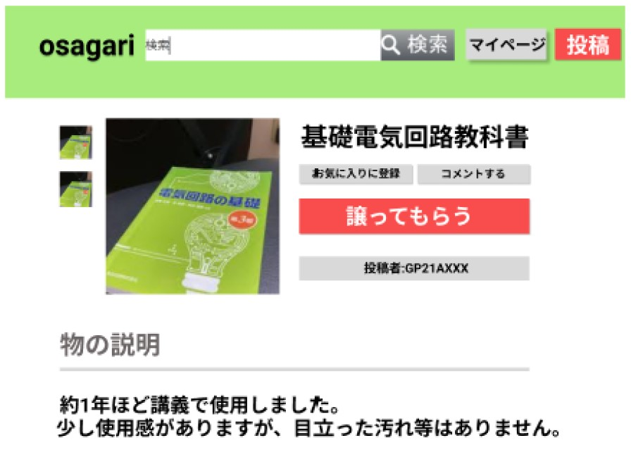
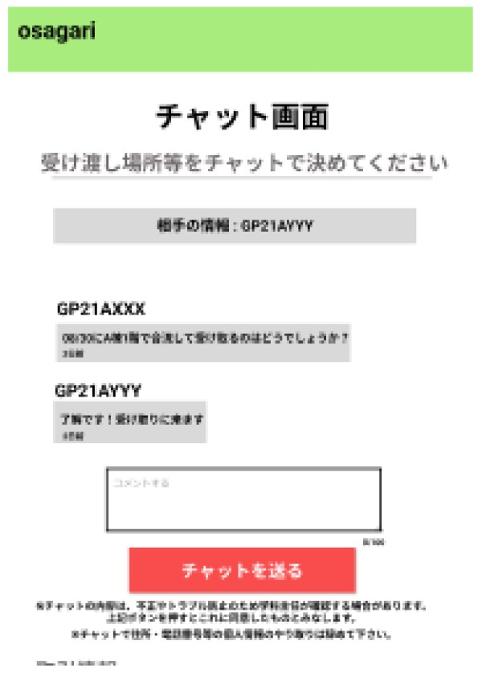
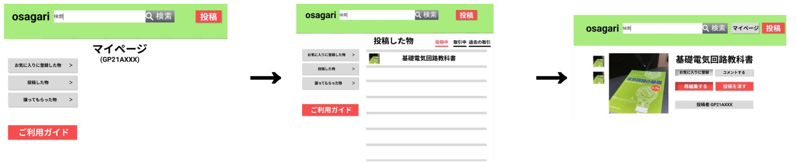

ご利用ガイド
1.投稿する
トップページ右上の「投稿」から、表示される案内に沿って投稿しましょう。
2.物の情報を入力する
物の画像（最大４枚）・物の名前・物の状態などを投稿画面の案内に沿って入力しましょう。

3.譲られた後にすること
マイページ → 投稿したもの → 取引中から選択し、チャット画面で受け渡し場所や時間を双方で決めましょう。

4.最後にすること
譲ったことを双方で確認したら、下部の「取引を終了する」ボタンを押して取引を終了しましょう。

1.ほしいものを探す
商品一覧を見たり検索機能を使ったりしてほしいものを探しましょう。
2.譲ってもらう
「譲ってもらう」をクリックしてチャット画面へ移動しましょう。

3.連絡をする
チャット画面で受け渡し場所や時間を決めましょう

4.最後にすること
譲ったことを双方で確認したら、下部の「取引を完了する」ボタンを押して取引を終了しましょう。
Q.投稿したものを削除したい
マイページ → 投稿したもの → 投稿中から消したいものを選択し、「投稿を消す」ボタンを押して削除しましょう。

Q.取引キャンセルしたい
どうしてもキャンセルしたい場合はチャット画面で事情を説明し、 物をもらっていない段階で画面下部にある「取引を完了する」ボタンを双方で押して取引を終了してください。
Q.投稿したものを再編集したい
マイページ → 投稿したもの → 投稿中から再編集したいものを選択して 「再編集する」ボタンを押して削除しましょう。
Q.商品一覧に戻りたい
画面左上にある「osagari」の文字をクリックすると戻れます。